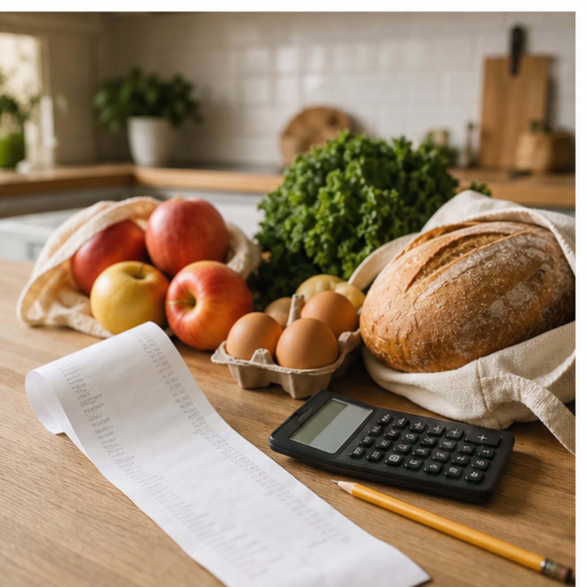
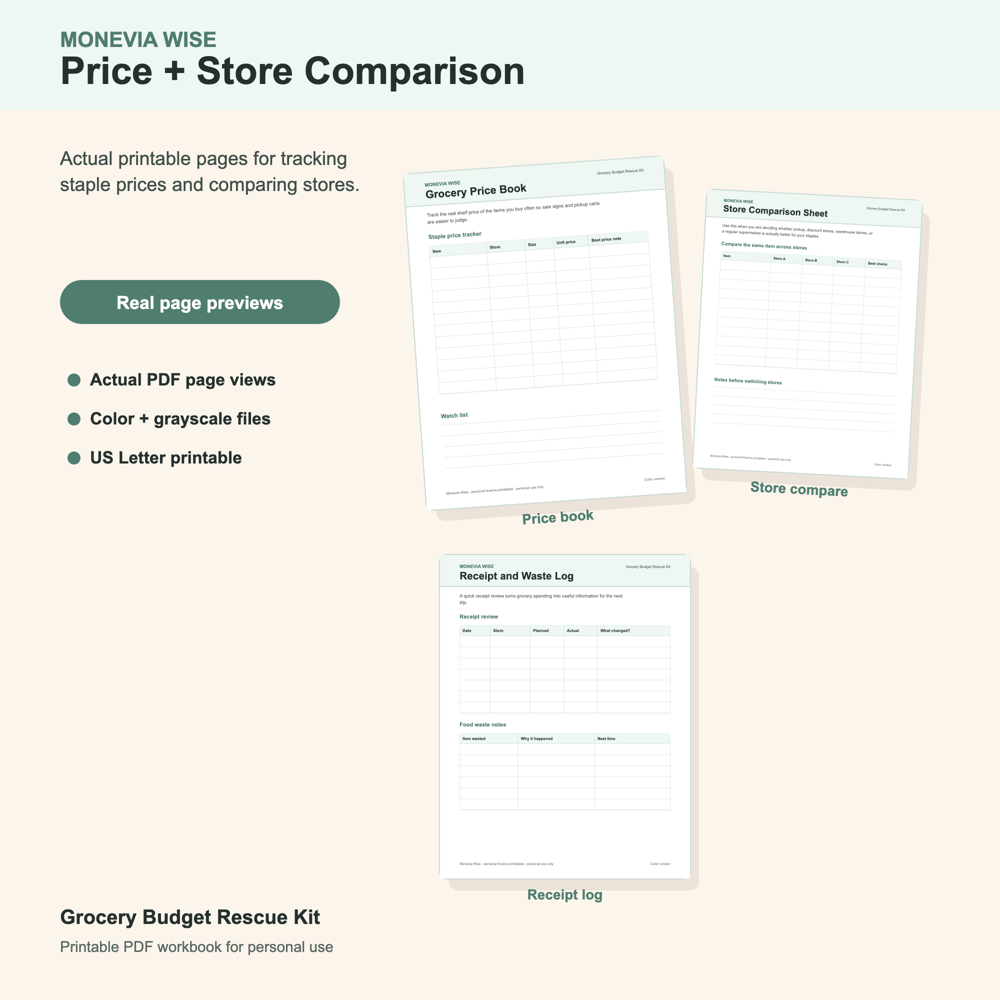
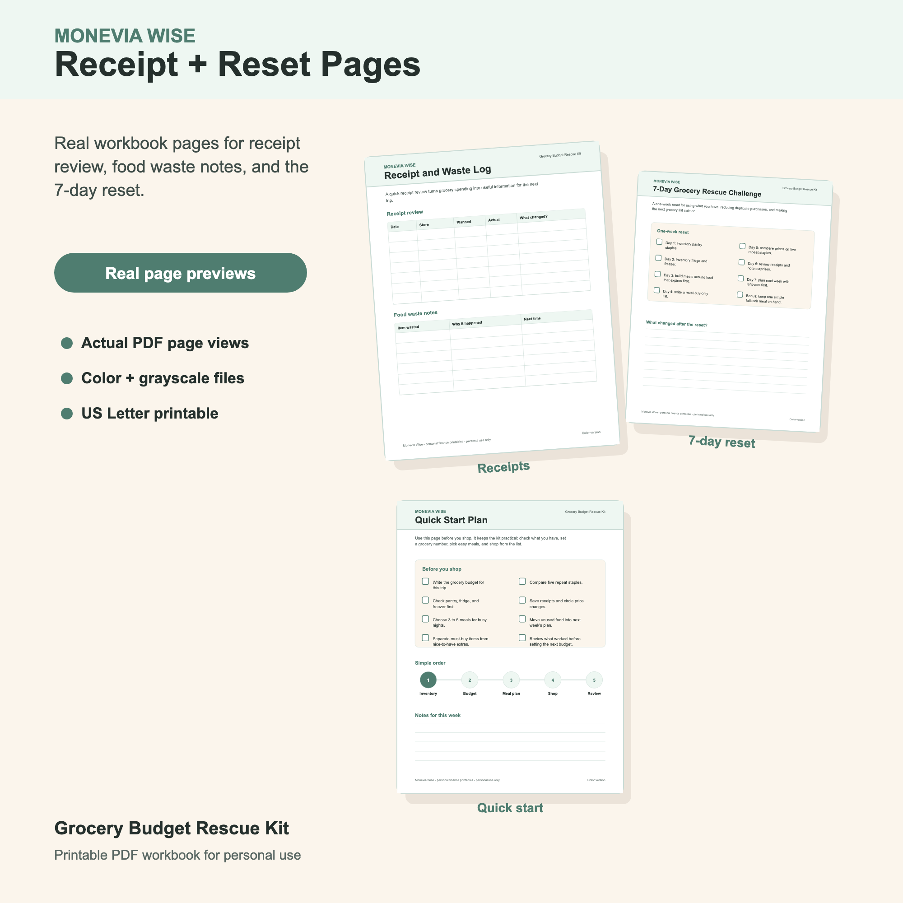

How to Make a Grocery Budget That Actually Works
A grocery budget is easier to keep when it is based on real receipts, real meals, and the prices you actually see at your stores.

A grocery budget that only looks good on paper will fall apart quickly. Food prices change, household routines change, and one busy week can make a perfect meal plan unrealistic. A working grocery budget needs room for real life while still giving your shopping trip a clear limit.
The easiest way to start is with evidence. Receipts, repeat staples, and the meals your household actually eats will give you a better number than a guess.
Use Recent Receipts Before Setting A Goal
Pull two to four recent grocery receipts and write down the totals. Then circle the categories that pushed the bill up: meat, snacks, convenience meals, beverages, household items, or impulse additions. This is not about guilt. It is about seeing where the money went.
If your recent trips were $165, $142, and $178, setting a $75 grocery budget for the same household will probably create frustration. A better first target might be $150 with one specific adjustment, such as using freezer protein first or limiting duplicate snacks.

Separate Groceries From Household Extras
Many grocery totals include paper towels, detergent, pet food, medicine, toiletries, and cleaning supplies. If those items stay inside the grocery number, the food budget will look inconsistent. Decide whether your grocery budget includes household goods or whether those items get their own line.
This one decision makes receipt reviews much clearer. A high grocery trip may not mean food spending went wild. It may mean three household staples renewed at once.
Track Five Staple Prices
You do not need a complicated price book. Start with five items you buy almost every week: eggs, milk, bread, rice, chicken, yogurt, fruit, or coffee. Write the store, size, shelf price, and unit price when you can find it.
After a few trips, patterns show up. You may notice that one store is best for produce but not pantry staples, or that a warehouse size only helps when your household uses it before it expires.
Build The Budget Around Meal Routines
A realistic grocery budget respects the way you actually eat. If weeknights are busy, plan a few low-effort meals instead of pretending every dinner will be cooked from scratch. If lunches are packed, add those ingredients on purpose. If kids need snacks, include snacks instead of treating them as a surprise.
The budget gets easier when it is honest. You can still choose less expensive meals, compare stores, and use inventory first, but the plan should fit your calendar.
Review And Adjust One Thing At A Time
After each grocery trip, compare planned spending with actual spending. Note what changed: price increases, missing inventory, forgotten items, a bulk purchase, or an extra convenience meal. Pick one adjustment for the next trip.
Small, repeatable improvements are usually more useful than a strict grocery number you can only hit once.
